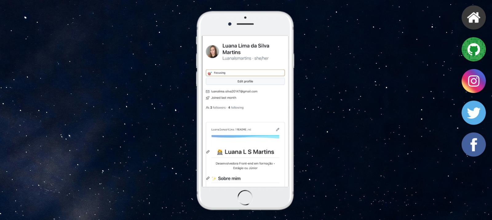

Luana L S Martins
Sou tecnóloga em Análise e Desenvolvimento de Sistemas e técnica em Administração, com foco em desenvolvimento front-end. Tenho estudado constantemente HTML, CSS e JavaScript, aplicando o conhecimento em projetos práticos para manter meu portfólio sempre atualizado. Gosto de transformar ideias em interfaces funcionais, responsivas e bem estruturadas, valorizando código limpo e boas práticas. Estou em busca da minha primeira oportunidade como desenvolvedora front-end, onde eu possa aprender, evoluir tecnicamente e contribuir com soluções criativas.
Minhas skills
HTML5
70%
CSS3
60%
JavaScript
40%
PHP
10%
Python
20%
Comunicação
90%
Organização
95%
Autonomia
85%
Trabalho em equipe
95%
Formação
2021 - 2022
ETEC - Ourinhos
Técnico em Administração
2021 - 2023
FATEC - Ourinhos
Técnologo em Análise e Desenvolvimento de Sistemas
Projetos

2025
Projeto Cordel
Projeto construído para treinar efeito paralax em imagens.
Saiba mais...
Problema que o projeto resolve: Transformar um conteúdo literário tradicional (cordel) em uma experiência de leitura agradável na web, mantendo hierarquia, legibilidade e boa apresentação visual.
Tecnologias utilizadas: HTML5, CSS3, Git e GitHub Pages
O que eu aprendi: Estruturar corretamente textos longos usando HTML semântico. Trabalhar hierarquia de títulos e parágrafos para melhorar a leitura. Aplicar CSS para valorizar conteúdo textual. Publicar projetos estáticos utilizando GitHub Pages.
Acesse aqui

2025
Projeto Android
Projeto construído para treinar conteúdos e imagens dinâmicas.
Saiba mais...
Problema que o projeto resolve: Apresentar informações técnicas de forma organizada, clara e visualmente agradável, facilitando a leitura e a navegação do usuário.
Tecnologias utilizadas: HTML5, CSS3, Git e GitHub Pages
O que eu aprendi: Utilizar HTML semântico para estruturar conteúdos informativos. Organizar textos e imagens em seções bem definidas. Aplicar estilos com CSS para melhorar a experiência do usuário. Desenvolver páginas responsivas simples e publicar projetos utilizando GitHub Pages.
Acesse aqui

2025
Projeto Redes Sociais
Projeto construído para treinar responsividade e múltiplos media queries e divulgar as minhas principais redes sociais.
Saiba mais...
Problema que o projeto resolve: Centralizar links de redes sociais em uma interface simples e intuitiva, facilitando o acesso do usuário a diferentes perfis em um único lugar.
Tecnologias utilizadas: HTML5, CSS3, Git e GitHub Pages
O que eu aprendi: Trabalhar com links e imagens de forma integrada. Criar layouts focados em usabilidade e organização visual. Posicionar elementos de forma clara para melhorar a navegação do usuário. Publicar páginas estáticas utilizando GitHub Pages.
Acesse aqui

2025
Projeto Login
Tela de login responsiva desenvolvida com foco em validação de formulários e experiência do usuário.
Saiba mais...
Problema que o projeto resolve: Simular uma interface de autenticação comum em aplicações web, garantindo clareza dos campos, feedback visual imediato e uma experiência de uso próxima à de sistemas reais.
Tecnologias utilizadas: HTML5, CSS3, JavaScript, Git e GitHub Pages.
O que eu aprendi: Implementar validação de formulários em tempo real com JavaScript. Trabalhar com manipulação do DOM e eventos. Criar feedback visual para erros e sucessos (mensagens, bordas e animações). Desenvolver layouts responsivos e melhorar a usabilidade de formulários.
Acesse aqui